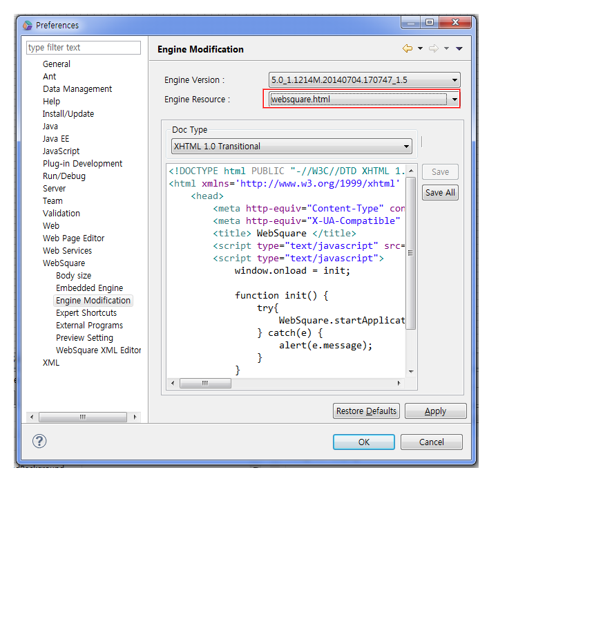
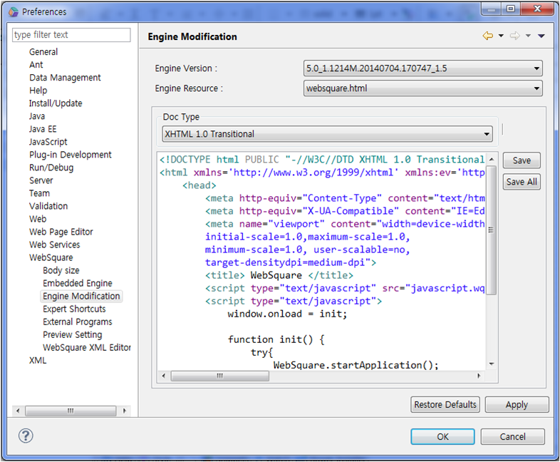

5.websquare.html
Websquare.html은 config.xml의 초기 설정을 가지고 Websquare 엔진을 로딩시켜 주는 html 파일입니다. Websquare XML을 코딩한 뒤, 개발자 도구로 보기 전 브라우저로 소스보기를 실행했을때 보이는 소스가 Websquare.html 입니다. 더 나아가 추상적으로 구조를 생각해 보면, 코딩한 xml이 파싱되고 파싱된 HTML들을 Websquare.html가 둘러 싸는 구조가 됩니다.

그렇기에 문서 타입을 정하거나 viewport 설정등의 이유로 <head>태그 안에 추가해야 할 meta 태그가 있다면 이 Websquare.html을 수정해야 합니다.
웹스퀘어5에서는 위에 config.xml과 함께 직접 수정할수 있는 기능을 제공하고있습니다.
IE 렌더링 모드 지정
간혹가다 웹표준으로 코딩이 안되어있거나 하위 혹은 상위 브라우저를 고려하지 않은 채 퍼블리싱이 되어 있는 페이지들을 최신 브라우저로 보면 많이 깨져 보이는 경우가 있습니다. 그럴경우 meta 태그를 이용하여 사이트 접속자의 IE 렌더링 모드를 정해줘야 합니다. 퍼블리싱 이슈 이외에 개발단 이슈로 인해 이 meta 태그를 지정하는 경우도 있으니 담당 개발자와 의논을 해야합니다. 아래 meta 태그는 DTD가 있을 경우에만 해당되고, DTD가 없을 경우에는 Quirks Mode (쿼크 모드, 비표준 모드)로 자동으로 랜더링 합니다.
Quirks Mode<meta http-equiv="X-UA-Compatible" content="IE=5" />
IE 7 Standards 모드<meta http-equiv="X-UA-Compatible" content="IE=7" />
IE 8 Standards 모드<meta http-equiv="X-UA-Compatible" content="IE=8" />
가장 최신 버젼 IE의 Standards 모드<meta http-equiv="X-UA-Compatible" content="IE=Edge" />
모바일 페이지 작업시 view port 지정
모바일 브라우저들은 PC의 브라우저 윈도우에 해당하는 Viewport 라는 것을 갖고 있습니다. 기본 Viewport의 넓이는 980px로 설정되어 있어서 980px 보다 작게 제작된 웹페이지에서는 그만큼의 여백이 생기고 가변 웹페이지의 경우에는 980px로 자동 설정 됩니다.(960px?)iPhone을 기준으로 iPhone의 실제 화면 사이즈는 320px(W) 480px(H)이므로 기본 980px으로 표시한 경우 PC의 1/3~1/2정도의 크기로 축소되어 표시됩니다. 그때문에 페이지에 처음 접속했을때 작아서 확대를 해서 보지만, 화면이 깨지는 등의 현상이 발생하게 되는데, 모바일 브라우저들은 Viewport를 설정할 수 있는 Meta Tag가 있습니다.
< 예제 >
<meta name="viewport" content="width=device-width, initial-scale=1.0, maximum-scale=1.0, minimum-scale=1.0, user-scalable=no, target-densitydpi=medium-dpi" />
해당 매타 태그를 추가하면 디바이스 크기에 맞게 맞춰주고 사용자가 확대를 하여 화면이 깨지는 상황을 방지하기 위해 화면 확대를 막아놓게 됩니다. 모바일 페이지 작업을 할 경우에는 대부분 이러한 설정의 메타 태그를 사용하게 됩니다. 더 자세한 설명은 웹사이트(https://developer.mozilla.org/en-US/docs/Mozilla/Mobile/Viewport_meta_tag?redirectlocale=en-US&redirectslug=Mobile%2FViewport_meta_tag)를 참고하시길 바랍니다.
Websquare.html 의 수정
실제 프로젝트에서는 Websquare.html이 개발상의 이유로 Websquare.jsp로 바뀔 수 있으며 로컬 엔진의 경로와 많이 차이가 나므로 수정이 필요할 때에는 프로젝트의 Resource 관리를 하는 담당자에게 문의하시길 바랍니다.

[그림 5-1]15
수정하여 저장한 뒤 해당 페이지를 새로고침하여 확인해 보면 추가한 meta 태그가 추가된 것을 확인할 수 있습니다.
Websquare 스튜디오 이외에 Edit Plus, 드림위버와 같은 다른 편집기로 열어 수정했을 시에는 꼭 인코딩을 확인하여 주시기 바랍니다. 다른 편집기로 작업시 파일 자체 인코딩이 깨져 Websquare가 오작동 하는 많은 사례들이 있었습니다. 가급적이면 계속 작업하던 Websquare 스튜디오 혹은 Eclipse로 수정하길 바랍니다.